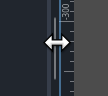
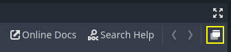

Customizing the interface
Godot's interface lives in a single window by default. Since Godot 4.0, you can split several elements to separate windows to better make use of multi-monitor setups.
Moving and resizing docks
Click and drag on the edge of any dock or panel to resize it horizontally or vertically:

Resizing a dock in the editor
Click the "3 vertical dots" icon at the top of any dock to change its location, or split it to a separate window by choosing Make Floating in the submenu that appears:

Moving a dock in the editor
To move a floating dock back to the editor window, close the dock window using the × button in the top-right corner of the window (or in the top-left corner on macOS). Alternatively, you can press Alt + F4 while the split window is focused.
Splitting the script or shader editor to its own window
Note
This feature is only available on platforms that support spawning multiple windows: Windows, macOS and Linux.
This feature is also not available if Single Window Mode is enabled in the Editor Settings.
Since Godot 4.1, you can split the script or shader editor to its own window.
To split the script editor to its own window, click the corresponding button in the top-right corner of the script editor:

Splitting the script editor to its own window
To split the shader editor to its own window, click the corresponding button in the top-right corner of the script editor:

Splitting the shader editor to its own window
To go back to the previous state (with the script/shader editor embedded in the editor window), close the split window using the × button in the top-right corner of the window (or in the top-left corner on macOS). Alternatively, you can press Alt + F4 while the split window is focused.
Customizing editor layouts
You may want to save and load a dock configuration depending on the kind of task you're working on. For instance, when working on animating a character, it may be more convenient to have docks laid out in a different fashion compared to when you're designing a level.
For this purpose, Godot provides a way to save and restore editor layouts. Before saving a layout, make changes to the docks you'd like to save. The following changes are persisted to the saved layout:
Moving a dock.
Resizing a dock.
Making a dock floating.
Changing a floating dock's position or size.
FileSystem dock properties: split mode, display mode, sorting order, file list display mode, selected paths and unfolded paths.
After making changes, open the Editor menu at the top of the editor then choose Editor Layouts > Save. Enter a name for the layout, then click Save. If you've already saved an editor layout, you can choose to override an existing layout using the list.
After making changes, open the Editor menu at the top of the editor then choose Editor Layouts. In the dropdown list, you will see a list of saved editor layouts, plus Default which is a hardcoded editor layout that can't be removed. The default layout matches a fresh Godot installation with no changes made to the docks' positions and sizes, and no floating docks.
You can remove a layout using the Delete option in the Editor Layouts dropdown.
Tip
If you name the saved layout Default (case-sensitive), the default
editor layout will be overwritten. Note that the Default does not appear
in the list of layouts to overwrite until you overwrite it once, but you can
still write its name manually.
You can go back to the standard default layout by removing the Default
layout after overriding it. (This option does not appear if you haven't
overridden the default layout yet.)
Editor layouts are saved to a file named editor_layouts.cfg in
the configuration path of the Editor data paths.
Customizing editor settings
In the Editor menu at the top of the editor, you can find an Editor Settings option. This opens a window similar to the Project Settings, but with settings used by the editor. These settings are shared across all projects and are not saved in the project files.

The Editor Settings window
Some commonly changed settings are:
Interface > Editor > Editor Language: Controls the language the editor displays in. To make English tutorials easier to follow, you may want to change this to English so that menu names are identical to names referred to by tutorials. The language can also be changed in the top-right corner of the project manager.
Interface > Editor > Display Scale: Controls how large UI elements display on screen. The default Auto setting finds a suitable value based on your display's DPI and resolution. Due to engine limitations, it only takes the display-provided scaling factor on macOS, not on Windows or Linux.
Interface > Editor > Single Window Mode: If enabled, this forces the editor to use a single window. This disables certain features such as splitting the script/shaders editor to their own window. Single-window mode can be more stable, especially on Linux when using Wayland.
Interface > Theme > Preset: The editor theme preset to use. The Light theme preset may be easier to read if you're outdoors or in a room with sunlight. The Black (OLED) preset can reduce power consumption on OLED displays, which are increasingly common in laptops and phones/tablets.
FileSystem > Directories > Autoscan Project Path: This can be set to a folder path that will be automatically scanned for projects in the project manager every time it starts.
FileSystem > Directories > Default Project Path: Controls the default location where new projects are created in the project manager.
Editors > 3D > Emulate Numpad: This allows using the top row 0-9 keys in the 3D editor as their equivalent numpad keys. It's recommended to enable this option if you don't have a number pad on your keyboard.
Editors > 3D > Emulate 3 Button Mouse: This allows using the pan, zoom and orbit modifiers in the 3D editor even when not holding down any mouse button. It's recommended to enable this option if you're using a trackpad.
See the EditorSettings class reference for a complete description of most editor settings. You can also hover an editor setting's name with the mouse in the Editor Settings to show its description.